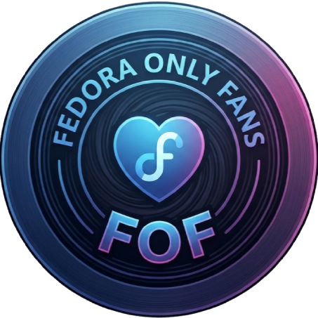

Gerencie e automatize o Fedora Linux
Antes de prosseguir com as etapas de configuração e instalação de aplicativos, é altamente recomendado realizar uma atualização completa no seu sistema operacional.
Atualiza o índice de repositórios, sincroniza as chaves de segurança e baixa as versões mais recentes de todos os componentes do sistema.
Configura os downloads paralelos simultâneos e ativa a busca automática pelo espelho de servidor mais rápido.
Instale os pacotes de tradução, o corretor ortográfico e altere a localidade padrão do sistema:
Configura o relógio do hardware para usar o padrão UTC, evitando bagunça nos horários ao alternar sistemas.
Instala e sincroniza os repositórios oficiais RPM Fusion, adiciona suporte a metadados do AppStream e executa um ajuste de segurança para garantir que o canal de desenvolvimento (Rawhide) não seja ativado por engano.
Adiciona o repositório global Flathub e garante a instalação do gerenciador de pacotes Flatpak no sistema.
Instala as ferramentas e bibliotecas necessárias para extrair e compactar arquivos nos principais formatos.
Substitui o ffmpeg-free pela versão completa sem restrições, instala plugins gstreamer essenciais e habilita o Cisco OpenH264.
Força a atualização dos índices do gerenciador de firmwares e aplica patches de estabilidade.
Habilita sub-repositórios restritos para habilitar reprodução de DVDs comerciais e firmware proprietário.
Instala drivers e utilitários de aceleração de vídeo em hardware para placas de vídeo AMD e Intel.
Instala o instalador de fontes Microsoft do SourceForge para obter Arial, Times, Calibri, etc.
Instala as ferramentas e bibliotecas Vulkan em versões de 32 e 64 bits para suporte nativo ao Proton.
Instale os principais launchers de jogos e pacotes essenciais para o Fedora.
Abra a central de software do seu sistema para gerenciar os apps de forma independente:
Instala o v4l2loopback do kernel para que o OBS gere webcams virtuais para chamadas de vídeo.
Processador de efeitos de som para PipeWire para aplicar redução de ruídos e equalizações.
Limpa o cache do DNF, dependências órfãs e runtimes de flatpak não utilizados.
Gerencie os kernels instalados no seu sistema.
Prepara e baixa os pacotes para a próxima grande versão do Fedora.
Sincroniza os pacotes locais com a release estável de produção.
O Btrfs-Assistant é uma ferramenta gráfica para gerenciar snapshots do sistema de arquivos Btrfs, permitindo criar e restaurar backups do seu sistema.
Baixa e instala a versão mais recente do FOF diretamente do GitHub. Mantenha seu app sempre atualizado!
Remove completamente o FOF do seu sistema, incluindo todos os arquivos, configurações e atalhos.